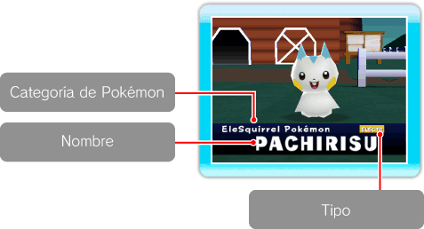

|
9
|
Pantalla del juego
|
 |
|
Pantalla de introducción a los
Pokémon
 Pantalla de la granja
Menú principal
Si apuntas a la pantalla aparecerá el menú
principal. Visualizar el nombre
El nombre del Pokémon o del Mii se visualizará cuando centres la
cámara sobre él. Si marcas a tu Pokémon preferido, solamente podrás
llevarlos a la granja si seleccionas Favorites (favoritos) en el
menú de los Pokémon la granja. (→p. 17)
Modos (→p.10)
Cuando el modo está ajustado a Free Mode (modo libre) se
visualizarán en pantalla las palabras Free Mode. Si no aparece nada,
significa que el modo está ajustado a Auto Mode (modo automático).
Número de Pokémon
Cuántos Pokémon tienes en la granja. Focus Lock (enfocar)
Cuando has usado Focus Lock (enfocar) sobre un Pokémon o Mii,
podrás ver Focus Lock en pantalla. |


 sobre un Pokémon o Mii, podrás activar Focus Lock (enfocar). Si
oprimes de nuevo
sobre un Pokémon o Mii, podrás activar Focus Lock (enfocar). Si
oprimes de nuevo  |
 |
 |